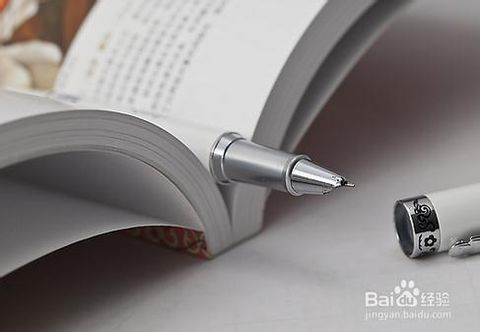

吃早饭真的很重要 谁知盘中餐，粒粒皆辛苦。 早餐很重要，俗话说“早吃好、午吃饱、晚吃少”。这个“好”， 不是山珍海味和大鱼大肉，而是营养均衡和健康自然。从明天起，要每天养成吃早饭的习惯。 读书可让自己变得强大起来 读书能帮你树立正确的三观 书籍是人类进步的阶梯，，通过阅读，你能够与先贤们博古烁今，你能够与文人骚客们煮酒论歌 ，你能够从无数正反面的故事中，吸取教训，增长见识，去粗取精，形成具有正面导向性的三观。 你若盛开，蝴蝶自来 破茧成蝶，独自远飞 蝴蝶是自然界美丽的昆虫。我赞美蝴蝶，因为它一生都是为了奉献自己的美丽。 我喜爱蝴蝶，因为它能为花朵传播花粉， 使人类受益。蝴蝶是为了让世界更美，才出现在世界上！ 08-08 2017 蝴蝶是自然界美丽的昆虫 蝴蝶是自然界美丽的昆虫。我赞美蝴蝶，因为它一生都是为了奉献自己的美丽。 我喜爱蝴蝶，因为它能为花朵传播花粉， 使人类受益。蝴蝶是为了让世界更美，才出现在世界上！ 阅读全文>> 08-08 2017 读书能帮你树立正确的三观 籍是人类进步的阶梯，，通过阅读，你能够与先贤们博古烁今，你能够与文人骚客们煮酒论歌 ，你能够从无数正反面的故事中，吸取教训，增长见识，去粗取精，形成具有正面导向性的三观。 阅读全文>> 08-08 2017 谁知盘中餐，粒粒皆辛苦。 早餐很重要，俗话说“早吃好、午吃饱、晚吃少”。这个“好”， 不是山珍海味和大鱼大肉，而是营养均衡和健康自然。从明天起，要每天养成吃早饭的习惯。 阅读全文>> 08-08 2017 蝴蝶是自然界美丽的昆虫 蝴蝶是自然界美丽的昆虫。我赞美蝴蝶，因为它一生都是为了奉献自己的美丽。 我喜爱蝴蝶，因为它能为花朵传播花粉， 使人类受益。蝴蝶是为了让世界更美，才出现在世界上！ 阅读全文>> 08-08 2017 读书能帮你树立正确的三观 籍是人类进步的阶梯，，通过阅读，你能够与先贤们博古烁今，你能够与文人骚客们煮酒论歌 ，你能够从无数正反面的故事中，吸取教训，增长见识，去粗取精，形成具有正面导向性的三观。 阅读全文>> 08-08 2017 谁知盘中餐，粒粒皆辛苦。 早餐很重要，俗话说“早吃好、午吃饱、晚吃少”。这个“好”， 不是山珍海味和大鱼大肉，而是营养均衡和健康自然。从明天起，要每天养成吃早饭的习惯。 阅读全文>> 08-08 2017 你若盛开，蝴蝶自来 蝴蝶是自然界美丽的昆虫。我赞美蝴蝶，因为它一生都是为了奉献自己的美丽。 我喜爱蝴蝶，因为它能为花朵传播花粉， 使人类受益。蝴蝶是为了让世界更美，才出现在世界上！ 阅读全文>>